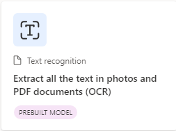
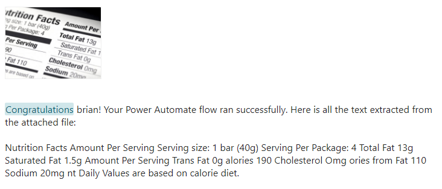

Using the same in-private browser instance, navigate to the Power Automate site if you are not already there.
In the top right of the screen, ensure the Environment is set to AIBuilderEnv.
Choose AI Models from the navigation. If it is not visible you might have to click the … More navigation to add it to the menu.

In the main portion of the screen click on the Documents tab to filter the results.

In the main portion of the screen click on the Documents tab to filter the results. Finally, select Extract all the text in photos and PDF Documents(OCR)

In the dialog, click on Use prebuilt model and choose Use in a flow option from the dropdown. This means we will build a re-usable Power Automate Flow to create a re-usable Flow to Extract all the text in photos and PDF documents (OCR).
Very similiar to the previous exercise validate that you see green checks next to all the connections. Then click Continue
Click on Save in the upper-right hand corner. Give it few seconds to complete.

Then click on the Test button

You might also get another Sign in prompt. Click Continue

Click the Import button.
Open the AIBuilderLabFiles folder that has the downloaded sample data. Then open the TextRecognizer folder. Select the TextReco-SamplePrinted.png invoice for the import.
Then click the Run flow button at the bottom

Flow is running. Then click Done

Next visit the Outlook web email again and look for the Text Recognition results email.

Review the results
